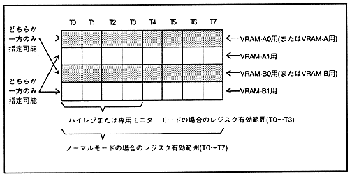

Table 3.2 Number of pattern name table data accesses required during one cycle
item | NBG0 to NBG3 | ||
Reduction setting | 1x | 1/2 times | 1/4 times |
| 1 | 2 | 4 |
Figure 3.3 Restriction of access to pattern name table data

¡Character pattern data read access during one cycle can be specified at any timing of the four banks in principle. However, the timing that can be specified is limited by the pattern name data access timing. However, only when the pattern name data access of NBG0 and NBG1 is specified as T0, each character pattern data read access can be specified at any timing of the four banks, and there is no limit. . The number of times of access must be specified by the number of times determined by the conditions, but it is not necessary to specify it at successive timings.
∙ Character pattern data read access frequency is shown in Table 3.3, and character pattern data read access specification restrictions are shown in Table 3.4.